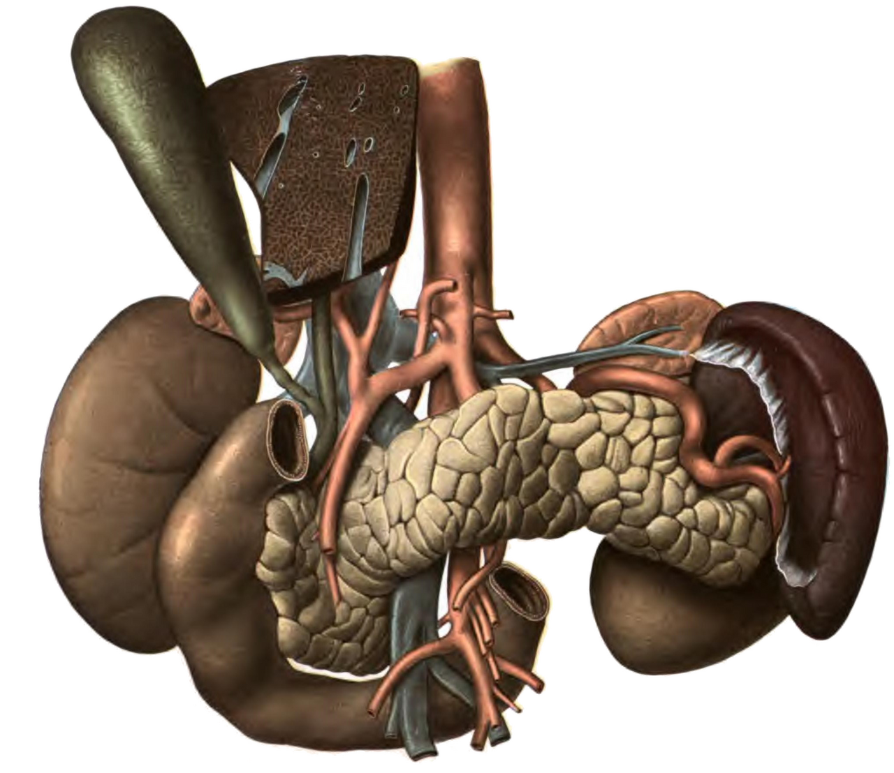
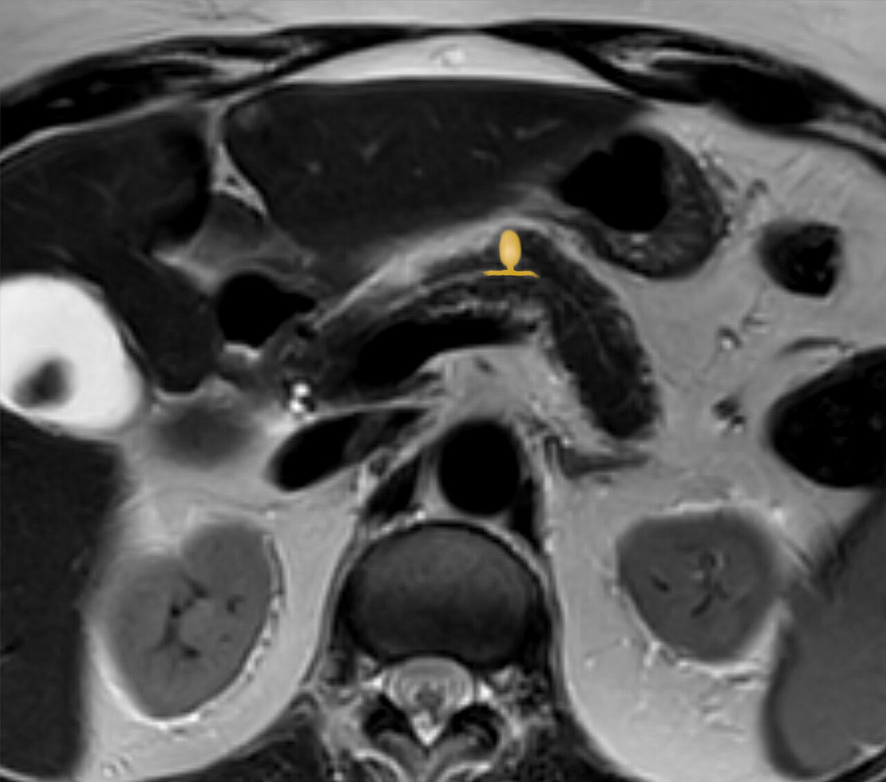
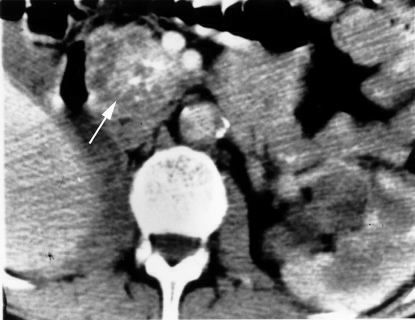
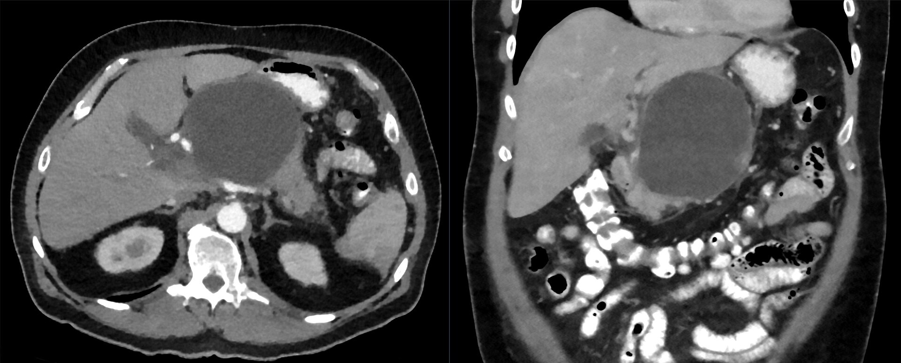

גידולים ציסטיים של הלבלב
ציסטה שנמצאה במקרה ב-CT: פסאודוציסטה או גידול? מתי עוקבים ומתי כורתים
בסוף המפגש תדעו
- להבדיל בין פסאודוציסטה לבין גידול ציסטי. להבדיל בין גידול מוציני ללא מוציני
- להכיר ארבעה גידולים: ציסטה סרוזית, MCN, IPMN ו-SPN. לדעת מה הסיכון לממאירות בכל אחד
- להשתמש בבירור נכון: CT או MRI, EUS ובדיקת נוזל הציסטה (CEA, עמילאז)
- לזהות סימנים מדאיגים וסימני סיכון גבוה ב-IPMN ולהחליט בין מעקב לניתוח
- לדעת איזה ניתוח מתאים ומה המעקב אחריו
ציסטות בכל מקום
- אחרי אדנוקרצינומה, הגידולים הציסטיים הם הנושא השכיח והחשוב ביותר בלבלב
- רובם מתגלים במקרה, בגלל השימוש הגובר ב-CT וב-MRI
- חלקם מקדימים סרטן לבלב. לכן המטרה כפולה: למנוע סרטן, בלי לנתח יותר מדי
- שלוש הנחיות מרכזיות: האמריקאית (AGA, 2015), הבינלאומית (IAP, 2017) והאירופית (2018)
איפה כל ציסטה אוהבת לשבת

👆 לחצו על אזור בציור כדי לקרוא עליו
המקום השכיח של IPMN (ראש יותר מאשר מפושט או גוף וזנב). גם ציסטה סרוזית נוטה לראש. ציסטה בראש שדורשת כריתה פירושה וויפל. לכן ההחלטה כאן כבדה יותר.
MCN ו-SPN יושבים בעיקר בגוף ובזנב. בגידול קטן ולא אגרסיבי בצוואר או בגוף אפשר לשקול כריתה מרכזית ששומרת רקמת לבלב.
MCN באישה צעירה, בזנב, בלי קשר לצינור: התמונה הקלאסית. הטיפול הוא כריתה דיסטלית, לעיתים קרובות זעיר-פולשנית. פסאודוציסטה קטנה בזנב נוטה להיעלם לבד.
ב-IPMN של הצינור הראשי רואים באנדוסקופיה ריר סמיך שיוצא מפפילה פתוחה (״פה של דג״). פסאודוציסטה בראש הלבלב שצמודה לתריסריון מנוקזת אליו.
צהבת אצל מטופל עם ציסטה בראש הלבלב היא סימן בסיכון גבוה: מצדיקה כריתה.
כריתה דיסטלית ל-MCN או SPN נעשית לעיתים עם הטחול. בנגע שפיר אפשר לפעמים לשמר אותו.
הלבלב, התריסריון והעורקים והוורידים שסביבם, מבט מלפנים · Sobotta, Atlas and Text-book of Human Anatomy (1906), איור 393 (נחלת הכלל)
חמש ציסטות, טבלה אחת
מה הנוזל מספר
איך הציסטות נראות



ציסטה סרוזית ו-SPN
- כמעט תמיד שפירה. בדרך כלל לא צריך מעקב
- בראש הלבלב, במטופלים מבוגרים יותר. כאב לא ממוקד, לעיתים ירידה במשקל או צהבת
- ציסטות קטנות רבות מלאות גליקוגן. הסתיידות מרכזית עם מחיצות שיוצאות ממנה ("כוכב") ב-10–20% מה-CT
- מתי כורתים: כשיש תסמינים, כשהאבחנה לא בטוחה, או בגודל מעל 4 ס״מ או גדילה מהירה
- אישה צעירה (25–35). גודל ממוצע 8 ס״מ, בגוף ובזנב
- לרוב מתגלה במקרה. עם תסמינים: גוש נמוש
- מוטציה ב-β-catenin, בלי KRAS, SMAD4 ו-TP53
- נחשב ממאיר: תמיד כורתים. אחרי כריתה שלמה 95.6% נשארים בלי מחלה
- 6% מגיעים עם מחלה מתקדמת מקומית, 8% עם גרורות. מעקב שנתי לכל החיים
MCN: ציסטה של נשים
- ציסטה מוצינית בלי קשר לצינור. בדופן: סטרומה דמוית שחלה, לרוב חיובית לקולטני אסטרוגן ופרוגסטרון
- נשים, בדרך כלל בעשור החמישי. בגוף ובזנב, רק לעיתים בראש
- עד 50% עם כאב לא ממוקד. כ-20% עם פנקריאטיטיס בעבר
- ב-CT: ציסטה בודדת, לעיתים עם מחיצות דקות והסתיידות היקפית
IPMN: שלושה סוגים
- גיל 60–70. כ-50% עם כאב בטן, עד 25% עם פנקריאטיטיס חריפה. לכן לעיתים מאובחנים בטעות כפנקריאטיטיס כרונית
- דרגות: דיספלזיה נמוכה, בינונית או גבוהה, עם או בלי סרטן פולשני
סימנים מדאיגים וסימני סיכון גבוה
- ציסטה של ענף צדדי מעל 3 ס״מ
- גוש בדופן שנצבע, קטן מ-5 מ״מ · דופן מעובה ונצבעת
- צינור ראשי 5–9 מ״מ · שינוי חד בקוטר הצינור עם אטרופיה מאחוריו
- בלוטות מוגדלות
- פנקריאטיטיס · CA 19-9 מוגבר · גדילה של יותר מ-5 מ״מ בשנתיים
- צהבת
- גוש בדופן שנצבע, 5 מ״מ ומעלה
- צינור ראשי מעל 1 ס״מ
כל מטופל עם סיכון גבוה או תסמינים: ניתוח, אם הוא כשיר
איך מגיעים להחלטה
כמה לכרות?
- ענף צדדי: כורתים את הנגע הבעייתי. הכריתה לפי המיקום: וויפל בראש, כריתה דיסטלית בגוף ובזנב
- צינור ראשי: קשה לדעת כמה מהצינור מעורב. בלי גושים לאורך כל הצינור: עדיפה כריתה מצד ימין (וויפל) עם חתך קפוא מהשוליים בצוואר
- דיספלזיה גבוהה או סרטן בשוליים: הרחבה לכריתת לבלב מלאה. כ-15% מהמטופלים יעברו בסוף כריתה מלאה. מדברים איתם על כך לפני הניתוח
- חשד לדיספלזיה גבוהה או סרטן: כריתה אונקולוגית מלאה עם בלוטות, בכל סוג ציסטה
פסאודוציסטה
- דופן של קולגן ורקמה גרנולציונית, בלי אפיתל. נבנית במשך 4–8 שבועות לפחות
- בכרונית רק 10% נעלמות לבד (בחריפה עד 70%)
מחקרים שכדאי להכיר
מחליפות את הנחיות פוקואוקה 2017. לראשונה מבוססות על סקירות שיטתיות. מוסיפות ממצאי EUS וציטולוגיה להגדרת הסימנים. בציסטה קטנה שלא השתנתה 5 שנים: אפשר להפסיק מעקב, או להמשיך בגלל הסיכון לסרטן נפרד בלבלב
Ohtsuka T et al. Pancreatology 2024;24(2):255-703,656 מטופלים עם ענף צדדי, מעקב ממוצע 7 שנים. ממאירות בניתוח ב-4.7%. ציסטה מתחת ל-2 ס״מ, בלי סימנים ובלי גדילה במשך 5 שנים: אף מקרה של ממאירות אחר כך. מרווחים מוצעים: 1.5 שנים, שנה או חצי שנה לפי הגודל
Han Y et al. JAMA Surg 2024;159(4):389-9683 מחקרים. ציסטה מתחת ל-1.5–2 ס״מ בלי סימנים מדאיגים גדלה לאט (0.23–0.6 מ״מ בשנה). אחרי 5 שנים יציבות: סיכון לממאירות 0–2%
Kazmi SZ et al. Pancreatology 2024;24(3):463-88חמישה דברים לקחת למחלקה
- לפני הכול: האם היה פנקריאטיטיס? פסאודוציסטה אינה גידול, אבל אסור לנקז גידול בטעות
- CEA בנוזל מעל 192 אומר מוציני, לא פולשני
- ציסטה סרוזית: לרוב משאירים. MCN ו-SPN: כורתים
- IPMN של הצינור הראשי: כורתים. ענף צדדי: לפי סימנים מדאיגים וסימני סיכון גבוה
- צהבת, גוש בדופן מעל 5 מ״מ או צינור מעל 1 ס״מ: ניתוח